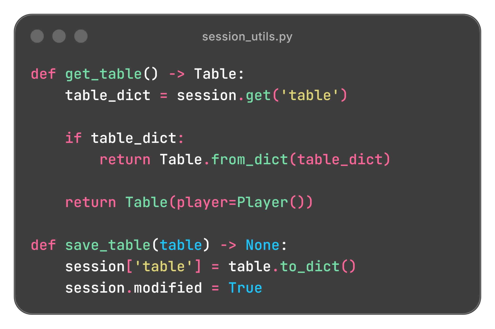
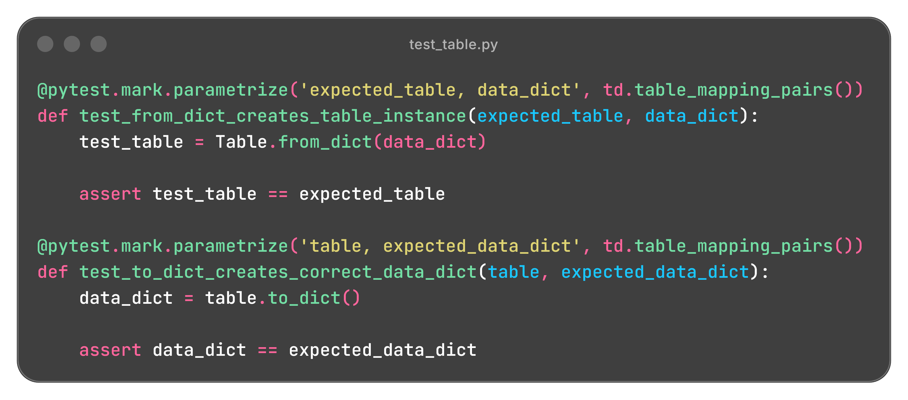

Python • Flask • Jinja • HTML/CSS
View GitHub RepoA browser based Blackjack game built with Python and Flask, adapted from my earlier command line implementation. The application supports wagering, splitting, doubling down, insurance, and payouts while maintaining game state across requests with Flask sessions.
The application separates the Flask web layer from the underlying Blackjack logic, with dedicated modules for game actions, rule validation, payouts, and domain state. Flask sessions are used to serialize and restore the current game between requests, while Jinja templates render that state in the browser.
blackjack-app/
├── app.py
├── engine/
│ ├── actions.py
│ ├── conditions.py
│ └── payouts.py
├── entities/
│ ├── bank.py
│ ├── card.py
│ ├── deck.py
│ ├── hand.py
│ ├── models.py
│ ├── player.py
│ └── table.py
├── utils/
│ ├── session_utils.py
│ └── validation.py
├── templates/
│ ├── index.html
│ └── macros.html
├── static/
│ ├── cards/
│ │ └── ...
│ ├── css/
│ │ └── ...
│ └── images/
│ └── ...
├─── tests/
│ ├── test_actions.py
│ ├── test_conditions.py
│ ├── test_payouts.py
│ └── ...
└─── requirements.txt
app.py handles incoming requests and coordinates game actions without
containing the core Blackjack rules itself.
engine/ contains the action, condition, and payout logic used to
determine what the player can do and how each round is resolved.
entities/ models the core game state, including the table, player, hands
deck, cards, and bankroll.
utils/session_utils.py converts the active game state into session safe
data and reconstructs the corresponding Python objects on later requests.
Jinja templates render the current game state, while the static assets provide the card imagery and styling.
The web application preserves the Blackjack rules from the original CLI project while adapting them to a browser based workflow. Player actions, wagers, hand progression, and outcomes are coordinated through Flask routes and reflected dynamically in the rendered interface.
Gameplay is controlled through server rendered forms, with each player action sent to a dedicated Flask route. Jinja templates use the current game state to determine which controls, cards, wagers, and outcomes should be displayed.
Chip buttons allow the player to build or reduce a wager before dealing, with the current wager reflected in the rendered interface.
Hit, stand, double, split, and insurance controls are displayed only when they are relevant to the current stage of the round.
Player and dealer cards are rendered from the current hand state, including a hidden dealer hole card until the dealer's turn begins.
Hand values, wagers, outcomes, insurance, results, and total winnings are updated as the round progresses.
The application tracks the active player hand throughout the round and advances play between hands before beginning the dealer sequence. Split hands retain independent cards, wagers, scores, and outcomes while sharing the same table and deck.
Qualifying hands can be repeatedly split into as many as four independently tracked player hands.
Each player hand stores its own wager, allowing split and doubled hands to be resolved independently.
Standing or reaching 21 advances control to the next player hand, with the dealer turn beginning after all player hands are complete.
The dealer's hidden card is revealed and cards are drawn automatically until the dealer reaches the required standing value.
At the end of a round, each player hand is evaluated independently against the dealer and assigned its own outcome. Standard wins, blackjack, pushes, doubled wagers, and insurance are resolved before the final results are rendered to the player.
Split hands can finish with different results within the same round.
Natural blackjack uses a 3:2 payout while standard winning hands use a 1:1 payout.
Tied hands return the original wager.
When the dealer shows an Ace, the game enters a separate insurance phase and resolves the side wager independently from the player's hand.
Because each HTTP request is independent, the active Blackjack state must be preserved between player actions. Game objects are converted into session compatible dictionaries after each action and reconstructed into their Python representation when the next request begins.
Core entities implement to_dict() methods that convert nested game state
including the table, player hands, deck, bankroll, and dealer, into data that can be
stored in the Flask session.
Corresponding from_dict() methods rebuild the object graph on each
request, allowing the game engine to continue operating on normal Python objects rather
than raw session data.
session_utils.py centralizes loading and saving the table, insurance, and
outcome state instead of handling serialization directly inside each Flask route.
Lightweight values such as the current wager, active game status, insurance phase, and winnings are stored directly in the session alongside the serialized game objects.
Player Action
↓
Flask Route
↓
Load Session State
↓
Reconstruct Table Objects
↓
Apply Game Logic
↓
Serialize Updated State
↓
Save to Flask Session
↓
Redirect / Render

The project uses pytest to verify the Blackjack engine and domain objects independently from the Flask interface. Tests cover gameplay actions and conditions, payouts, entity behavior, and the serialization methods used to preserve object state between requests.
Tests actions such as dealing, hitting, splitting, standing, and dealer progression along with the conditions that determine valid wagers, insurance, and round outcomes.
Validates cards, hands, decks, players, bankrolls, and table state, including hand values, Ace handling, balance changes, and object relationships.
Tests to_dict() and from_dict() implementations across the
game entities to ensure state can be converted to session compatible data and
reconstructed correctly.
Uses parameterized tests to verify blackjack, standard wins, pushes, and insurance calculations across different wager values.

The original CLI application could keep the active game objects in memory throughout the game loop, but a Flask application processes each player action as a separate request. I had to redesign how stat was preserved by converting nested game objects into session compatible dictionaries and reconstructing them when the next request began. This helped me better understand the stateless nature of HTTP and the need for explicit serialization when application state must persist between requests.
Moving the project to Flask required changing hwo the game was controlled without rewriting the Blackjack rules around the web framework. I refined the separation between entity behavior, engine level coordination, and Flask route handling so actions such as drawing cards, evaluating hands, and resolving outcomes remained independent of the interface. This reinforced the importance of keeping framework specific code separate from reusable domain logic.
Splitting introduced several independently changing pieces of state, including each
hand's cards, wager, turn status, and final outcome. In the web version, that state also
needed to be serialized, reconstructed, and rendered correctly after every player action.
Keeping each split hand represented by the same PlayerHand structure
allowed the engine, session system, and templates to work with multiple hands without
creating separate logic for each one.